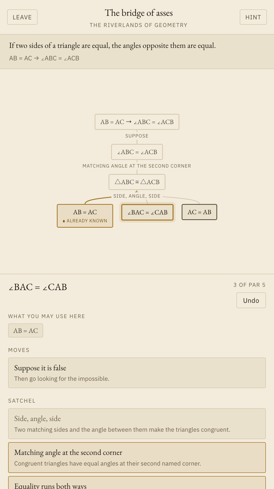
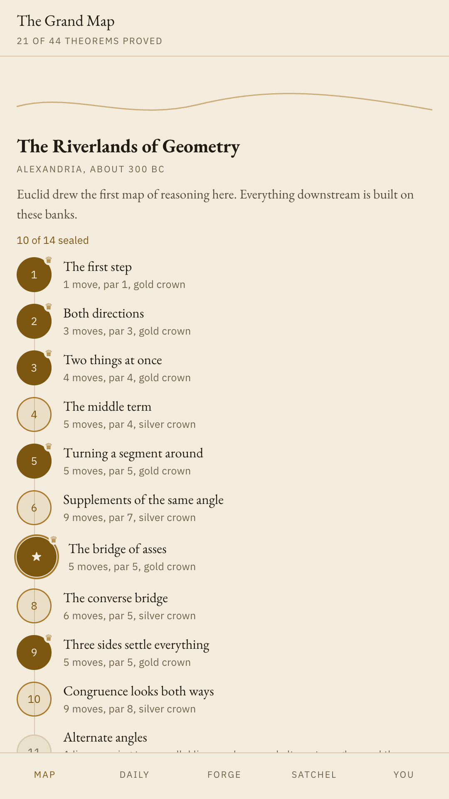
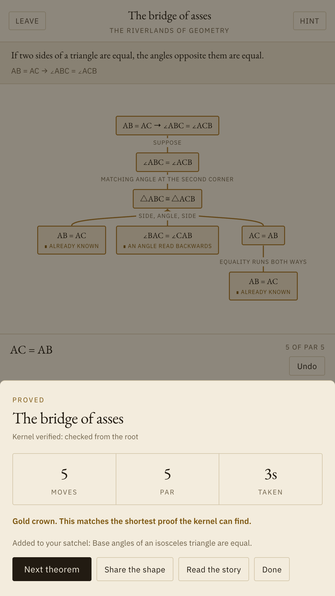
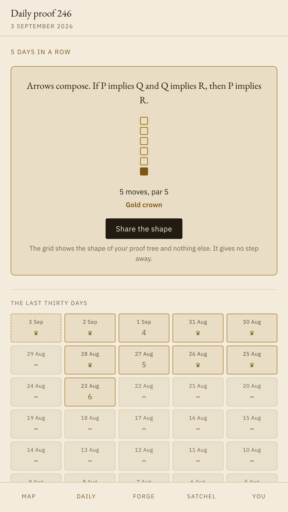

Axiom hands you a theorem and a satchel of axioms. You grow the proof by hand, and a verification kernel on your phone checks every step. When it says you proved it, you proved it.
Get it on Google Play
Chess apps did this for chess. Nobody had done it for proof.
Mathematics education is almost entirely arithmetic: the calculating half. The reasoning half, where the beauty actually lives, is taught nowhere outside a university course. It turns out it makes a very good puzzle game.
The theorem sits at the top of the board, unproven. Every move breaks it into something smaller until each branch lands on something already known.
Twenty five centuries, one map
Forty four theorems across three regions, each one a wax seal on the map. Lemmas you prove become tools you keep, so the game builds mathematics the way mathematics was actually built.



You never type mathematics. Every rule of inference is a button with a plain English name, and the kernel underneath is the real thing.
What is actually in the box
Under eight hundred lines of verification code sit beneath the board. It re-checks a finished proof from the root before it counts, and it produced every par in the game by searching for the shortest proof itself. Nothing in the content was scored by hand.
Axiom does not request the internet permission, so Android will not let it open a connection at all. The daily works in flight mode because it is computed from the date, not fetched.
Ranking players against each other would need an account and a server, and there is neither. Crowns are scored against the kernel's own shortest proof, which is a harder opponent and a more honest one.
Every region, every theorem, the daily proof, the forge and the whole satchel. No purchases, no energy, no advertising, and nothing held back behind a pass.
The oldest high in mathematics, on a phone.
Get it on Google Play